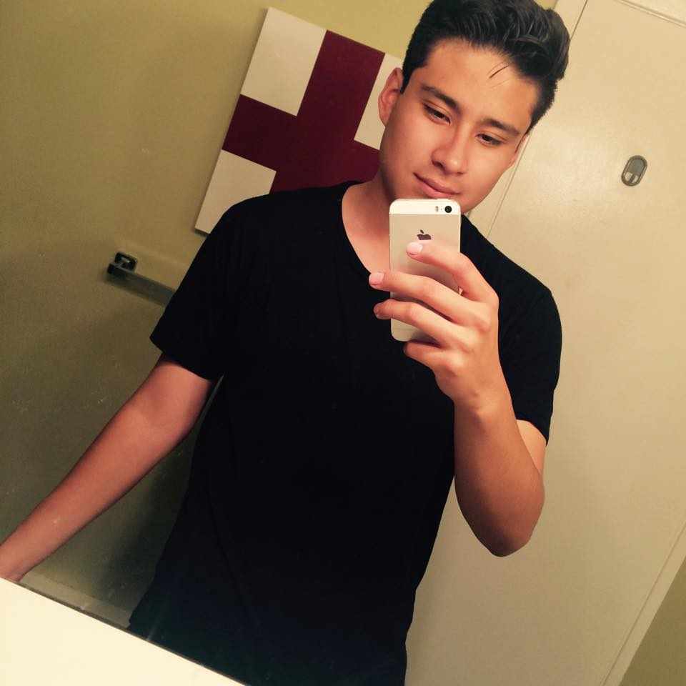

Biografía
Aldo Enrique Fernández Fragoso
Nacido el 23 de Febrero de 1998 en el Estado de México en Cuatitlan.
Interesado en la computación desde una edad temprana cuando recibio su primera laptop a la edad de 12 años, tiene un hermano 2 años menor siendo el primogenito, con una buena relación con su hermano menor que también se encuentra estudiando una ingeniería.
Enfocado en la seguridad informática y los análisis forenses de computadoras, interesado por las lenguas extranjeras y culturas de otros países. .